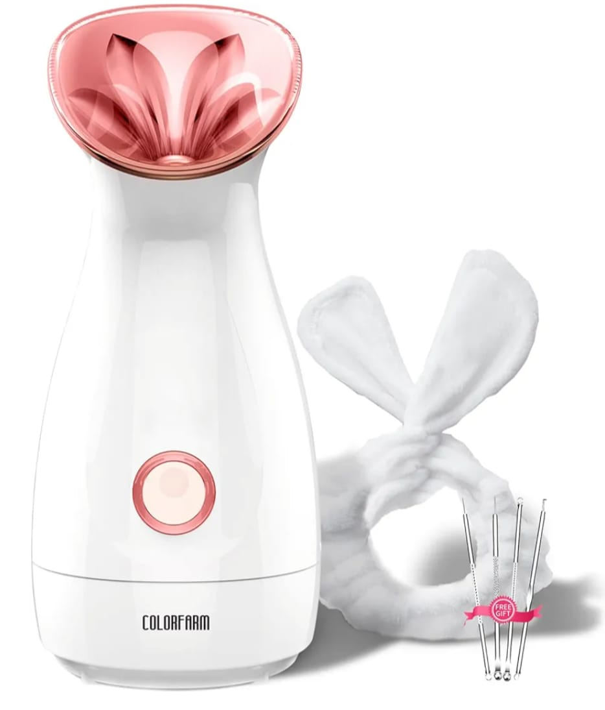

Hola de nuevo en este apartado te mostraremos diversos productos relacionado con la cara estos
siendo productos que ayudan a maquillarse o a otras cosas, siempre pensando en la belleza de la
mujer pero en esta ocasión ayudándolas con su hermoso rostro, ten en cuenta que no son todos
nuestros productos ya que todos los encontraras en nuestros locales.
Lápiz labial:
Un producto de maquillaje para los labios que proporciona color y textura.Estos teniendo
diversos colores y presentaciones las cuales la diferencia es el precio pero todo son buenos con
colores así como los requieres ya sea fuerte o sea suave, es según tu gusto.
Precios: varíanampliamente, desde productos económicos de menos de $5 hasta lápices labiales de
diseño que pueden superar los $50.
Máscara de pestañas:
Producto de maquillaje que se utiliza para dar volumen y longitud a las pestañas.Estas tiene
diversos grosores y diversas marcas las cuales son de calidad buscando el tono o el nivel de
pestaña que la compradora quiera.
precios: suelen estar en el rango de $5 a $30.
Brochas de maquillaje:
Las brochas son facilitadores para el manejo del maquillaje en el rostro. Esos teniendo diversos
tamaños para acoplarse a la necesidad de la usuaria la cual sabe q tan grande o pequeña tiene
que ser, nosotros contamos con diversas marcas muy buenas.
Precios: Rondan entre los 5 a 25 dolares por unidd dependiendo el tamaño y marca
Cremas antienvejecimiento:
Productos para el cuidado de la piel diseñados para reducir los signos del envejecimiento.Estas
cremas contando con un agradable olor y usando tecnología de calidad ello para el cuido de la
piel y así mantenerse mas joven.
Precios: pueden variar ampliamente, desde $20 hasta $100 o más.
Brochas y pinceles de maquillaje:
Herramientas esenciales para aplicar maquillaje de manera
precisa y uniforme.Contamos con juegos completos de estas herramientas para aplicar maquillajes,
estos siendo muy refinados y durables. Los puedes adquirir por unidad o por juego.
Los precios pueden variar desde unos pocos dólares hasta $50
o más por juego
Vaporizador para limpieza de cutis:

Este vaporizador es una solución práctica para completar
nuestra rutina de limpieza facial. Fácil y rápido de usar, con él lograremos abrir los poros y
hacer una limpieza más profunda. Además, podemos añadir el aceite esencial que más nos guste. El
aparato está indicado para pieles normales, grasas, secas y sensibles.
Precio:$41,47
Lápiz labial mate:
Los labiales mates son conocidos por su acabado sin brillo y su larga
duración. Vienen en una amplia variedad de colores, desde rojos intensos hasta tonos nude.Son
pintas labios muy refinados los cuales son de marcas muy conocidas con nosotros podrás obtener
una inmensa cantidad de colores y estilos los cuales puedes elegir.
Precio aproximado:$5 a $30 USD
Delineador líquido:
Este delineador generalmente viene en forma de un tubo con un aplicador de
pincel o punta de fieltro. Proporciona líneas nítidas y precisas, y puede ser utilizado para
crear líneas delgadas o gruesas.Además de resaltar su tono negros muy intensos los cuales son
fáciles de notar, esto siendo muy duradero y no tan fácil de quitar, esto mostrando su
maravillosa calidad de producto.
Precio aproximado:$5 a $25